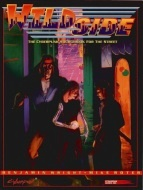

|  | Technical data |
| Supplement for the role-playing game Cyberpunk 2020, published by R. Talsorian Games (1993) | |
| Theme | The world of the street in 2020 |
| Background quality | 3 / 5 |
| Scenario quality | - |
| Rules quality | 1 / 5 |
| Artworks quality | 2 / 5 |
| Writing quality | 4 / 5 |
This supplement, dedicated to our friend the fixer, allows not only to deepen this kind of character, but also to work the underground side of the street. No more anonymous intermediaries, here the street is scrutinized. Unfortunately, some "obvious" aspects are put forward as revelations, which sometimes gives the impression of a certain padding. Fortunately, the text is dense, and if some passages are superfluous (notably the rules concerning the street, how a deal goes, the different types of fixers, etc), there is also some good stuff. Many elements are factorized from other supplements (Night City, Hardwired, Protect & Serve) and sometimes improved. In short, this supplement oscillates between new and old, trying to explain without bringing much novelty, and one can be disappointed by its "candid" approach to the urban subculture.
{kind=link}